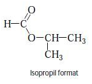
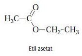
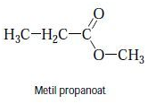
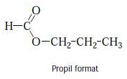
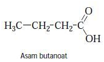
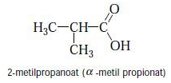

Etil asetat memiliki isomer struktural dan isomer fungsional dengan asam karboksilat. Contoh isomer struktur dan isomer fungsional untuk Etil asetat adalah sebagai berikut:
A. ISOMER STRUKTUR




B. ISOMER FUNGSIONAL


Keenam rumus struktur di atas memiliki rumus molekul sama, yaitu C4H8O2, tetapi berbeda baik dari aspek struktur maupun fungsionalnya. Jadi, ester (Salah satunya etil asetat) dan asam karboksilat berisomer fungsional satu dengan lainnya.